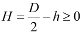
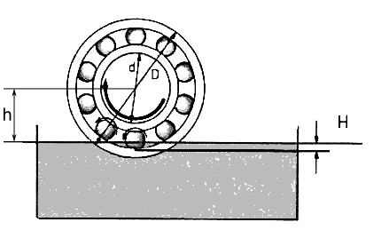

|
|
|


油位和润滑类型
要输入油位和润滑类型，请选择 。这些条目用于定义润滑损耗产生的摩擦力矩。h 值在轴计算中给出，并为每个轴承得出以下公式：


图 27.4：轴承的油位
可以定义两种不同的润滑方式：
- 油池润滑
- 油注入润滑
如果选择 （喷雾润滑）选项，则油池润滑中与流量损失相关的摩擦力矩的确定值将乘以 2。
Oil level and lubrication type
To input the oil level and lubrication type, select . These entries are required to define the moment of friction due to lubrication losses. The value h is given in the shaft calculation and results in the following formula for every bearing:
Figure 27.4: Oil level in the bearing
Two different types of lubrication can be defined:
- Oil bath lubrication
- Oil injection lubrication
If you select the (spray lubrication) option, the value determined for the flow loss-dependent moment of friction for oil bath lubrication is multiplied by 2.